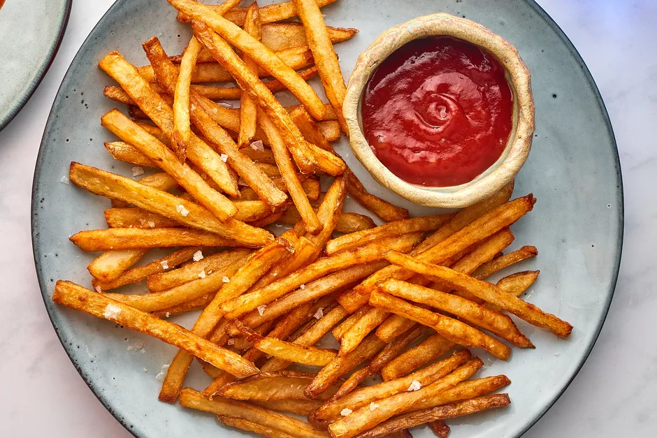

French Fries Recipe

-
Cut the Potatoes
Wash the potatoes, scrubbing them well, and dry completely. Peeling is optional and comes down to personal preference. Peeled or unpeeled, the cut is absolutely key when making fries. If you have a kitchen mandoline, this is the time to break it out and use it. If not, cut each potato in half the long way, lay the cut side flat on the cutting surface, and cut into 1/2-inch to 1/4-inch slices. Stack these slices and cut them into the same width sticks to make matchstick fries. Repeat with the remaining potatoes.
-
Soak the Potatoes
Put the cut potatoes in a large bowl and cover with cool water. Soak for at least 20 minutes or up to an hour. This step gets rid of excess starch, resulting in fluffier and crispier fries.
-
Drain and Dry the Potatoes
Drain the potato sticks and pat them dry with paper towels or a clean kitchen towel. Arrange them in a single layer to air-dry for a bit. The drier they are before frying, the better.
-
Fry the Potatoes
Bring at least 2 inches of oil in a large heavy pot to 325 F. Once the oil is hot, fry the potatoes for about 5 minutes. Work in batches if you're making more than one or two potatoes' worth. Adding too many fries at one time will bring down the temperature of the oil and cause soggy fries. The fries should be cooked through but still as pale as they were when you put them in the oil.
-
Drain and Cool the Half-Done Fries
Lift the fries out of the oil using a slotted spoon or spider. Drain them on a cooling rack set over a baking sheet or on layers of clean paper towels. Let sit until completely cool—at least 30 minutes and up to several hours.
At this point, you can stash the fries in the fridge and finish frying them the next day. Let them warm up a bit before frying again.
-
Fry the Potatoes Again
Bring the oil up to the 350 F to 375 F range. Use a thermometer or test the oil by dropping a fry in it—the oil should immediately sizzle around the fry actively but not violently. If it sputters and sizzles aggressively, bring the temperature down until you get an immediate and active yet steady sizzle when you add a fry to the oil.
Add the fries, working in batches if needed to keep them in a single layer in the oil, and cook until golden or starting to turn golden brown, depending on how well done you like your fries—about 5 minutes.
-
Drain the Fries
Once done, remove the fries from the oil. Drain them on a cooling rack set over a pan or on layers of paper towels. If you're salting your fries, season them while they are draining and still hot.
-
Serve Your Homemade French Fries
To serve, pile the homemade French fries onto a platter or into a bowl. If you've made a particularly large batch for a crowd, consider serving them on a layer of brown butcher paper in the middle of the table—it's heaps of fun. No matter how you serve them, be sure to serve the fries while they're still warm with a sprinkle of salt and your choice of dipping sauces.